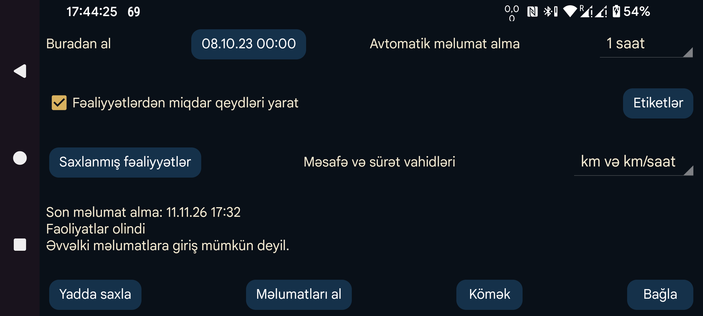

ar az be de es fa fr hi it ja ko nl pl pt ru sv tr uk uz zh en
Juggluco-nun Health Connect-də saxlanmış fəaliyyət qeydlərini əldə etməsinə icazə verir. Bunun üçün Samsung Health, Strava və ya Garmin Connect kimi başqa tətbiqlərin fəaliyyətləri Health Connect-ə göndərməsi əvvəlcədən qurulmalıdır.
Fəaliyyətlərdən Miqdarlar yarat: Hər fəaliyyətdən seçilmiş etiketlə Miqdar qeydi yaratmaq üçün Etiketlər bölməsindəki tənzimləmələrdən istifadə edir.
Etiketlər: Health Connect-də mövcud olan fəaliyyət növləri siyahısında hər növ üçün Juggluco-da hansı etiketin və hansı fəaliyyət ölçüsünün istifadə ediləcəyini seçin. Heç nə seçilməzsə, etiket Fəaliyyət, ölçü isə Müddət olur.
Bu tarixdən al: Health Connect-dən fəaliyyətlərin hansı tarix və saatdan başlayaraq alınacağını göstərir. Köhnə telefonlarda bu tarix Juggluco-ya Health Connect icazəsi verildiyi gündən 30 gündən daha əvvələ gedə bilməz.
Yadda saxla: Tənzimləmələri saxlayır.
Al: Fəaliyyət məlumatlarını indi Health Connect-dən alır.
Avtomatik alma: Fəaliyyət məlumatlarının Health Connect-dən müntəzəm alınmasını planlaşdırır.
Saxlanmış fəaliyyətlər: Saxlanmış fəaliyyətlərin siyahısını göstərir. Fəaliyyətlərdən Miqdarlar yarat aktivdirsə, yaradılmış Miqdara uzun basıb Fəaliyyət seçməklə də fəaliyyət qeydinə baxmaq olar.